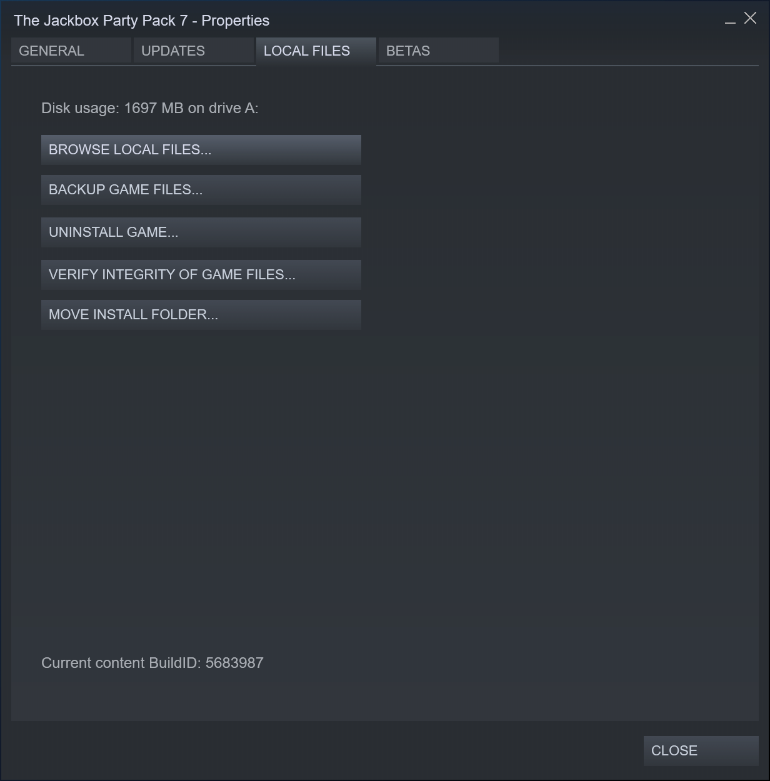

How To Create Custom Packs
Blather Round doesn't officially support custom packs, or any sort of modification. However, a lot of the game's data is stored in files that can simply be replaced with custom content. This webpage provides a user-friendly interface for creating custom content in the format that the game expects.
The words that the players try to guess each round are referred to as "passwords". The form at the top of the page allows you to edit one individual password at a time. If you want to add a password, click the "New Password" button and you will be prompted for a name. Once you are done editing this password, click the "Apply Changes" button to add it to the list. If you would like to edit a password that is already in the list, click on that password and it will appear in the editor.
The "Open File" button allows you to load in a previously created custom pack, or the game's original content, for editing. Currently, it expects the file called "BlankyBlankPasswords.jet" (see installation instructions below). After you select a file, a dialog will appear asking if you would like to combine the file with the existing passwords. If you click "Ok", the passwords in the file will be added to the list, on top of any passwords that are already in the list. If you click "Cancel", the list will be emptied before the passwords in the file are loaded.
How To Install Custom Packs
Note: the following instructions may change as updates are made to the editor.
Once you feel you have enough passwords in your custom pack, click the "Save Pack" button to download the files you need to install it. These files will be packed into a .zip folder, containing a file called "BlankyBlankPasswords.jet" and a folder called "BlankyBlankPasswords". You will need this file and this folder in just a moment.
In your Steam library, right-click on The Jackbox Party Pack 7 and click "Properties". In the properties window that opens, click on the "Local Files" tab, and click "Browse Local Files".
Within the folder that opens, navigate to "games\BlankyBlank\content". Make backups of the files in this folder by copying them to somewhere that you will remember; this will make it easier to restore the game's original content. Then, replace the file called "BlankyBlankPasswords.jet" and the folder called "BlankyBlankPasswords" with the versions that were in the .zip folder.
When you launch The Jackbox Party Pack 7 and start a game of Blather Round, you will see your custom content.